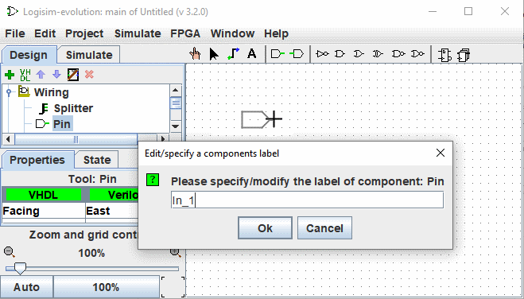
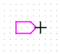

Self-numbered labels
This option allows you to place components with self-numbered labels for example Led_1, Led_2... . To use it, proceed as follows :
Select a tool in the navigation panel, for example a Pin, and move it to the work surface and before clicking to drop it press the L key.
Enter a label name ending with a number, e.g. "In_1".

From now on when you drop components of this type they will be automatically labeled with an increment. When the option is activated, the shadow of the components before their placement is colored pink.
It is possible to activate this option for different components simultaneously.

To deactivate, proceed in the same way as for activation, but use the A key. If you have activated self-labelling on components of a different type. You must deactivate it individually for each component type.
Keys and associated functions
L : Activates the function and set/Modify Label
T : Toggle label visibility
H : Set label visibility to false (hide)
V : Set label visibility to true (show)
A : Ends the self-numbered label function
Suite: Placing components in a matrix.